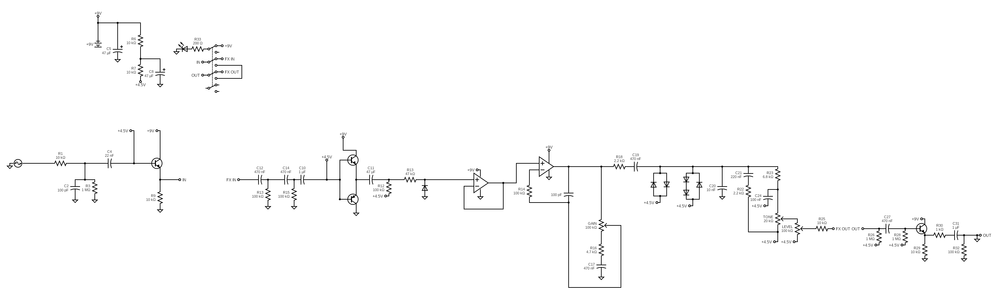
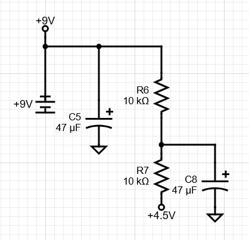
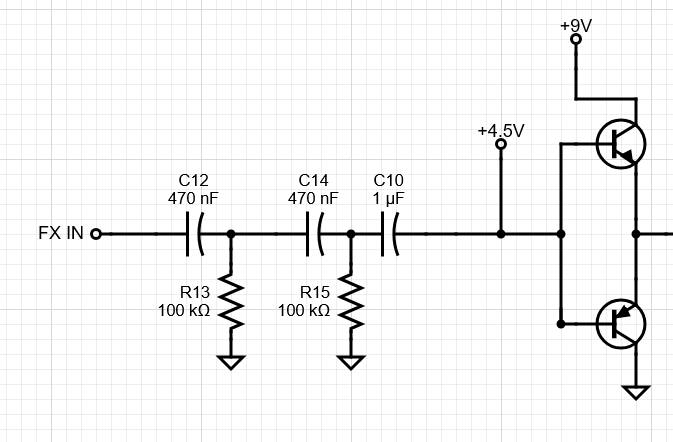
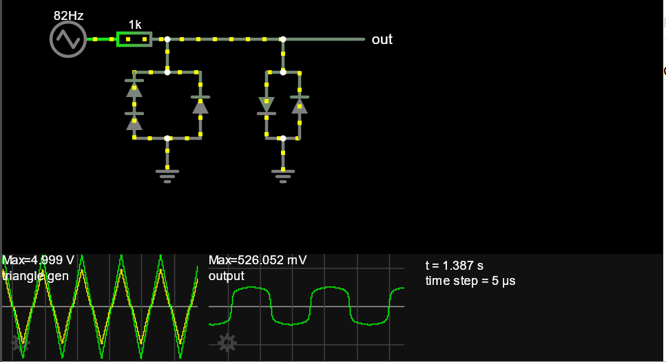
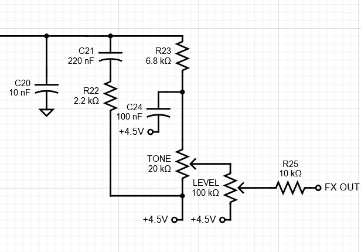
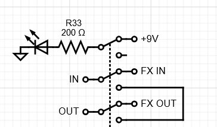

This is my personal project for iCan. It is a circuit design for a distortion pedal, largely based on the BOSS DS-1. The pedal itself 7 separate stages: the power supply, input buffer, pre-amplifier, gain, tone/level control, output buffer, and bypass switch.

This controls the flow of power through the battery towards the rest of the circuit. The pedal uses a 9V battery. C5 controls any stray noise that may come from the battery, and R6 and R7 form a voltage divider which creates a virtual ground, a middle point between 9V and 0V.
This is as buffer stage controlling the impedance of the guitar signal. The symbol on the left represents the AC signal of the guitar. C2 and R3 form a high-pass filter to clear out any unwanted external interference, like a radio signal. R1 protects the transistor from a surge current, C2 protects the guitar from any dangerous DC levels coming from the pedal. It also filters out inaudible lower frequencies. The transistor is an emitter follower biased to +4.5V setting an impedance of 10K ohms, which is standard for an emitter follower.

This is an amplifier stage using a Class AB amplifier, where two transistors, both biased to 4.5V, each amplify between 180-360 degrees of the waveform. This is an efficient and clean way to amplify the signal, preventing unwanted distortion, as I wanted the way the signal is distorted to be as intentional as possible.
C12, R13, C14, and R15 form two high-pass filters. This cuts out excess bass, since having too much bass in the distortion makes the sound muddy.

This is the first part of the gain stage. Two non-inverting operational amplifiers, that is, operational amplifiers that use the non-inverting pin, boost the guitar's signal even more. The amount of gain is controlled by the "GAIN" potentiometer, which the player can turn to either increase or decrease the gain, and therefore the strength of the distortion.

This is the second part of the gain stage. Two consecutive series of diodes operating in parallel clip the guitar's signal, which produces the distortion effect. The second series is asymmetrical, which rounds off the lower end a bit more. Having two diode clips makes the effect a lot stronger, gives it a harsher sound.

Here you can see a simulation of the clipping effect. As you can see, the high and low ends of the signal are rounded off significantly from the clip.

This is where the tone and level knobs come into play. C21, R22, R23, and C24 form two separate high- and low-pass filters, which are then blended with the TONE potentiometer. Turning the knob one way will bring in more high-end and less low-end, turning it the other way will bring in more low-end and less high-end. Afterwards, the LEVEL knob controls the volume of the pedal.

This is the output buffer. It's effectively identical to the input buffer, just ensuring high-impedance when being sent out of the pedal.

This is the bypass switch, effectively the pedal's on/off switch. It allows for the guitar's signal to be routed from the input buffer directly to the output buffer. Normal off switches, like a lightswitch, would just send the signal nowhere, but if we did that here, turning the pedal off would cut off the guitar signal from the rest of the signal chain and the amplifier. Basically, you wouldn't be able to play with it off. Therefore you have to just have the signal "skip" the effects loop instead. When the pedal is on, an LED will be connected to power to indicate that the pedal has been turned on.